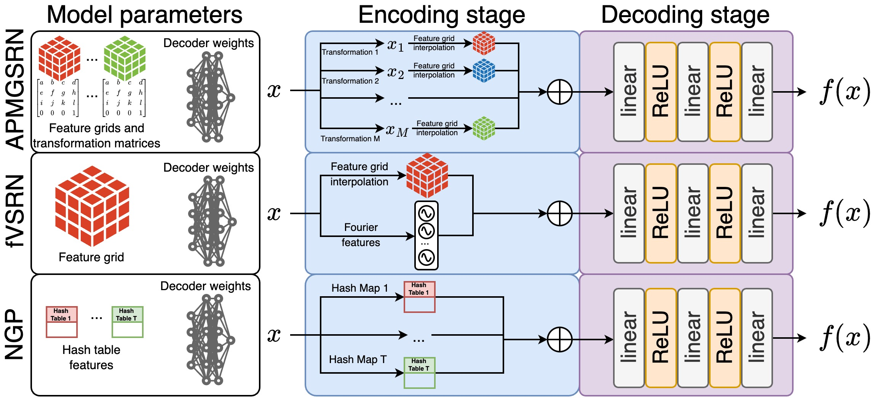

- Pure MLPs learn fine detail slowly, so modern methods store learnable features in a grid
- A query trilinearly interpolates grid features and a tiny MLP decodes them to a scalar
- fVSRN uses one dense grid, NGP uses multiresolution hash grids
- APMGSRN uses several small grids that move to where the data needs detail

Encoder comparison from Wurster et al. 2024